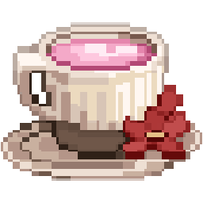
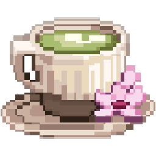
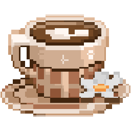
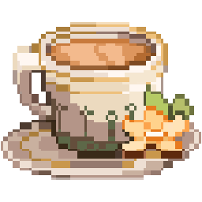

- DRAWN BY
- Eva Regelski
- DISCIPLINE
- UX, product, front-end
- CURRENTLY
- Lead designer, B2G software
- STATUS
- Open to new work
Selected work
ALL CASE STUDIES
Management dashboard redesign
Rebuilding how compliance officers track workforce qualifications across thousands of DoD personnel records.
Outcome: Taxonomy flaw caught before development
Design system and rebrand
A tokenized system that embeds 8140 policy knowledge directly in the interface, where the decisions get made.
Outcome: One hue, one token layer
Mortgage conditional approval campaign
A research-led, seventeen-week cadence across nine channels that kept approved borrowers moving toward a completed application.
Outcome: Call scripts standardized bank-wideGet to know me
I came to UX through a mix of marketing, studio art, and a genuine curiosity about how things work. That blend is what makes me a little different — I can sketch a wireframe, write a research plan, and tweak the CSS, all in the same afternoon.
These days I lead design at a small B2G software company, which means research, product design, design systems, and enough front-end to keep the handoff honest.
ALSO
Code projects and games live under Development. Illustration, painting and pixel work live under Illustration.
Kind words
From the people I've worked with and learned alongside.

As the UX Designer on a squad charged with deepening customer relationships across multiple products and through multiple channels, Eva started contributing from the start and helped them achieve aggressive goals. They were a Seal Team sent to improve performance wherever it was needed most and Eva's skills, drive, and humor complemented the team's perfectly. She is a sharp listener who can synthesize a lot of disparate information quickly and clearly. And she is a quintessential team player who will add mightily to any fast-moving, dynamic team needing broad UX and visual design skills, curiosity and confidence, with research and presentation abilities that will help everyone around her to be their best.

Eva is an incredibly versatile designer who jumps into all her work with energy and commitment. It has been remarkable to see how quickly she has been able to grow and develop new skills and drive business results and impact. Eva's partners and teammates love working with her and can not speak enough about her incredibly strong collaboration and partnership.

Eva directly contributed to the organization's success: Across the execution of Key's new campaigns to better deliver small business, mass affluent, home lending and private banking capabilities, Eva led with a progressive and impactful approach to copy, collateral and design; Eva proved an ability to engage with Clients differently and more effectively, than prior efforts, given her commitment to understanding Client needs.

Eva brings enthusiasm, positivity and a creative spark to every initiative she works on and takes tremendous pride in delivering exceptional products to market. A true outside of the box thinker and doer. It was a pleasure to work together on various projects.
Eva is a strong, well-rounded designer who I have had the pleasure of working with on multiple projects. Her approachable and cooperative nature has made her an amazing addition to the teams I have been on in the past. Her designs are always considerate of both the user and the research process, along with being highly usable and intuitive. What makes her standout is her talent as a visual artist. Her command of color and composition are immediately apparent in her designs. Eva's knack for creating her own illustrations has become a defining trait of hers amongst her peers at General Assembly. To any team wondering if Eva will be a strong addition, wonder no more.
I had the pleasure to work with Eva on two projects and thoroughly enjoyed her persistent work ethic, collaboration and communication. Eva allows the research to lead her design decisions which is obvious in her beautiful user-friendly designs. Besides being proficient in Figma, Eva is an excellent illustrator, which allows her to bring a unique style and approach to her designs.
Get in touch
Have a question, an opportunity, or just want to talk video games? I'm in.